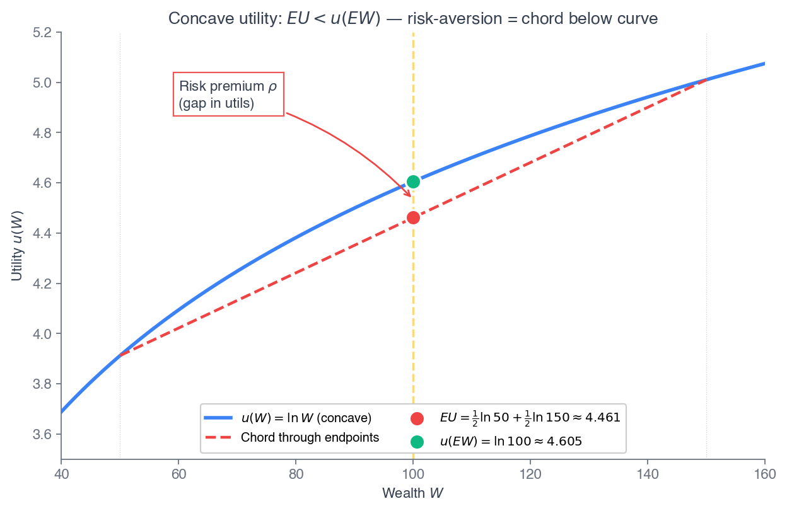
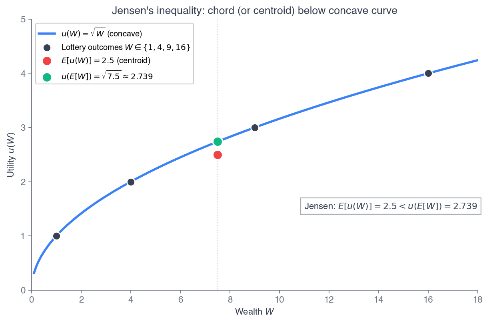
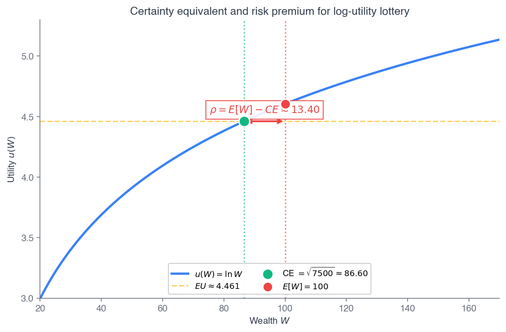
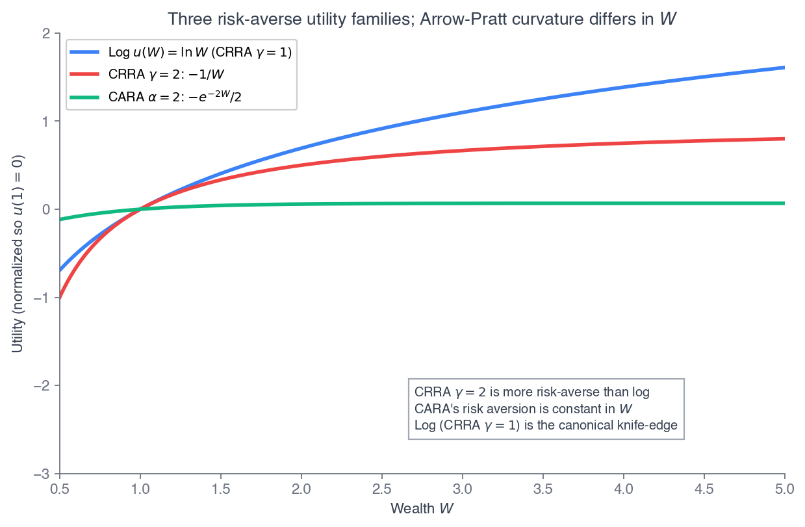
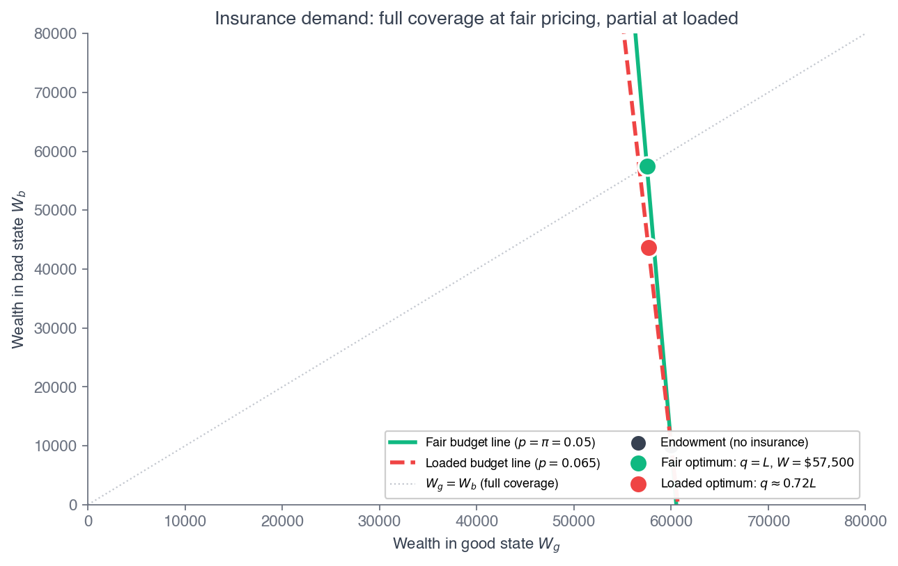
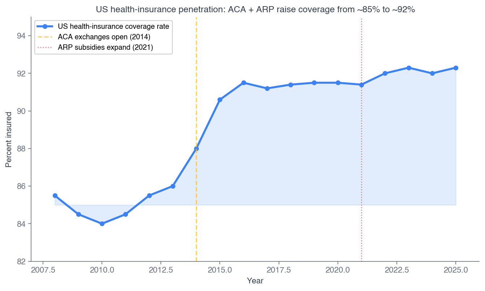

Click anywhere (or press Esc) to close
ECON 2316 • Microeconomic Theory • Chapter 15
Chapter 14 modeled choice between players. Now a single decision-maker faces something no rival controls — risk itself. Expected utility is the machinery: lotteries, concave utility, certainty equivalents, and the insurance a risk-averse agent buys.
Dr. Richeng Piao
Department of Economics
Northeastern University — 100 min
By the end of class today, you will be able to…
1
Construct a lottery and compute its expected value — and explain why expected value alone cannot rank risky prospects. (Bloom L3)
2
Define expected utility and the von Neumann–Morgenstern axioms; read risk attitude off the curvature of the Bernoulli utility. (Bloom L4)
3
Compute the certainty equivalent and risk premium of a lottery via Jensen's inequality. (Bloom L4)
4
Derive the Arrow–Pratt coefficient and the small-risk approximation \(\rho \approx \tfrac{1}{2}\sigma^2 A(W)\). (Bloom L5 — central result)
5
Solve the optimal-insurance problem and state the Mossin full-coverage-at-fair-premium theorem. (Bloom L3)
Part IV — what we closed
Part V — market failures open here
Part V is where Chapter 10's welfare theorem fails. Uncertainty (Ch 15), asymmetric information (Ch 16), externalities (Ch 17), and public goods (Ch 18) each break the result that competitive equilibrium maximizes surplus. Ch 15 starts by building the toolkit — expected utility — that the rest of Part V relies on.
A 32-year-old freelance designer — the same Maya from Chapter 1 — earns about \$60,000, has no employer plan, and is in good health. The marketplace offers a Silver plan at a net premium of \$498/month after her tax credit: \$5,976 per year.
Her expected medical loss is small — roughly a 5% chance of a \$50,000 event, an expected loss near \$2,500/year. The premium is more than twice the expected loss.
A risk-neutral agent who compares dollar averages would refuse. Yet buying coverage is, for most people, the rational choice. Why?
\$60K
income — ~383% of FPL
5%
chance of a \$50K event
\$2,500
expected loss / year
\$5,976
annual net premium
The earlier chapters cannot answer Maya. Ch 4's deterministic preferences say nothing about uncertainty over wealth; Ch 14's games are about rivals, not lotteries. We need new machinery: value a risky prospect by the expected utility of a concave function on wealth. By the end of class, Mossin's theorem will tell us exactly when full coverage is rational.
§15.1
The right way to describe a risky prospect — and why its average payoff is only half the story
A lottery lists state-contingent payoffs and their probabilities:
\(L = (x_1, \pi_1;\ x_2, \pi_2;\ \ldots;\ x_n, \pi_n)\)
with \(\pi_i \geq 0\) and \(\sum_i \pi_i = 1\). The expected value is the probability-weighted average payoff:
\(E[L] = \sum_{i=1}^n \pi_i\, x_i\)
A fair coin paying \$50 or \$150 has \(E = \$100\). A 1-in-100 hospitalization costing \$50,000 has \(E[\text{loss}] = \$500\).
Heads Up 15.1 — \(\pi_i\) is a probability, not a profit
In Chapters 9–14, \(\pi\) meant profit. From here on, \(\pi_i\) is the probability of state \(i\). The letter \(p\) is reserved for prices and per-unit premiums. Read \(\pi_2 = 0.05\) as “state two realizes 5% of the time.”
This lets us write expected utility cleanly as \(\sum_i \pi_i\, u(x_i)\) without overloading any symbol.
What EV misses. A sure \$1 has \(E = 1\). So does “win \$1,000,000 with prob \(\tfrac12\), lose \$999,998 with prob \(\tfrac12\).” Same expected value — but almost no one is indifferent between them. Expected utility (§15.2) exists to formalize that difference.
Problem. Maya faces three states: no event (\(\pi_1 = 0.92\), loss \$0); moderate event (\(\pi_2 = 0.06\), loss \$8,000); major event (\(\pi_3 = 0.02\), loss \$50,000). Compute the expected loss.
| State | \(\pi_i\) | Loss | \(\pi_i \times\) Loss |
|---|---|---|---|
| No event | 0.92 | \$0 | \$0 |
| Moderate | 0.06 | \$8,000 | \$480 |
| Major | 0.02 | \$50,000 | \$1,000 |
Check \(\sum \pi_i = 1\). Then \(E[\text{loss}] = 0 + 480 + 1{,}000 = \) \$1,480 / year.
Recall from Principles — 1116 §18.3
Principles computed expected value for simple gambles — a fair coin, a Take-5 ticket, a \$1,200 premium against an \$800 expected loss — and called the willingness to overpay risk aversion. This chapter makes it a property of the utility function.
Takeaway. \$1,480 is the actuarially fair price of full coverage — the rare-but-large state drives it (\$1,000 of \$1,480 from a 2% event). A risk-averse Maya will happily pay more than \$1,480; §15.6 says exactly how much.
Maya faces a 5% chance of a \$50,000 loss — an expected loss of about \$2,500. The ACA plan costs \$5,976/year, more than twice the expected loss. Is buying it irrational?
45 sec to vote
A dollar lost when wealth is already reduced by a medical event hurts more than the same dollar saved in a good year. Equalizing wealth across states is worth paying for — up to the risk premium.
Trap A: comparing dollar averages is risk neutrality. The whole point of expected utility is that the shape of \(u(W)\), not the average payoff, governs the choice.
§15.2
Rank lotteries by the average utility of wealth — and risk attitude lives in the curvature of \(u\)
For an agent with Bernoulli utility \(u\) on wealth, the expected utility of a lottery is
\(EU[L] = \sum_{i=1}^n \pi_i\, u(x_i)\)
The agent ranks lotteries by \(EU\). Named for Daniel Bernoulli (1738), who used \(\ln W\) to resolve the St. Petersburg paradox — the fair price reflects expected utility, not expected payoff.
\(u\) is unique up to a positive affine transform \(\tilde u = a + bu\) (\(b>0\)): the level of utility is meaningless — only its shape matters.
Von Neumann–Morgenstern (1944): four axioms are jointly equivalent to the existence of such a \(u\).
Completeness — any two lotteries are comparable
Transitivity — rankings don't cycle
Continuity — no “lexicographic” jumps
Independence — mixing with a common third lottery \(C\) preserves the ranking
Independence is the substantive new axiom — and the one most often violated in the lab (Allais 1953, Ellsberg 1961). More on that at the close.
Problem. A lottery pays \$0 or \$100, each with probability \(\tfrac12\), so \(E[L] = \$50\). Compare each agent's \(EU[L]\) to the sure \(u(50)\).
Risk-neutral — \(u=W\)
\(EU = \tfrac12(0)+\tfrac12(100) = 50\); \(u(50)=50\). Indifferent.
Risk-averse — \(u=\sqrt{W}\)
\(EU = \tfrac12(0)+\tfrac12(10) = 5\); \(u(50)=\sqrt{50}\approx 7.07\). \(5 < 7.07\) → takes the sure \$50.
Risk-loving — \(u=W^2\)
\(EU = \tfrac12(0)+\tfrac12(10{,}000) = 5{,}000\); \(u(50)=2{,}500\). \(5{,}000 > 2{,}500\) → takes the lottery.
Takeaway. Same \$50 expected payoff for all three. They differ only in how utility scales with wealth. Concave \(u\) = risk-averse (averaging utilities falls below the utility of average wealth); convex = risk-loving; linear = risk-neutral. Risk attitude is encoded entirely in the shape of \(u\).
§15.3
Why the shape of \(u\) is risk attitude — a theorem, not a pattern
Result. For concave \(u\) and any random wealth \(W\),
\(E[u(W)] \leq u(E[W])\)
strict for strictly concave \(u\) on any non-degenerate \(W\).
Proof sketch. Concavity ⇒ \(u\) lies below its tangent at \(\bar W = E[W]\):
\(u(W) \leq u(\bar W) + u'(\bar W)(W - \bar W)\)
Take expectations; the linear term has mean \(0\), leaving \(E[u(W)] \leq u(\bar W)\).
Equivalence: \(u\) is concave \(\Longleftrightarrow\) the agent is risk-averse. Concavity is necessary and sufficient.

Chord below curve: \(EU \approx 4.461 < u(E[W]) \approx 4.605\). The gap is risk aversion.
Problem. \(u(W)=\ln W\); a 50/50 lottery lands wealth at \$50 or \$150. Find \(EU\), the certainty equivalent \(CE\), and the risk premium \(\rho\).
1. \(E[W] = \tfrac12(50)+\tfrac12(150) = 100\).
2. \(EU = \tfrac12\ln 50 + \tfrac12\ln 150 = \tfrac12\ln 7{,}500 \approx 4.460\).
3. \(CE = e^{EU} = \sqrt{7{,}500} = 50\sqrt{3} \approx \$86.60\).
4. \(\rho = E[W] - CE = 100 - 86.60 \approx \$13.40\).
Under log utility, the \(CE\) is the geometric mean \(\sqrt{W_L W_H}\), always below the arithmetic mean — the gap is \(\rho\).

Jensen again: \(E[u(W)] = 2.5 < u(E[W]) = 2.739\).
Problem & solve
Problem. \(u(W) = 2W - W^2/100\) on \([0,100]\), with \(u'>0\). A 50/50 lottery between \$40 and \$60.
\(u(40) = 80 - 16 = 64\); \(u(60) = 120 - 36 = 84\). \(EU = \tfrac12(64)+\tfrac12(84) = 74\).
Solve \(2\,CE - CE^2/100 = 74\) ⇒ \(CE^2 - 200\,CE + 7{,}400 = 0\).
\(CE = 100 - \sqrt{2{,}600} \approx 49.01\) (lower root, since \(CE \leq E[W]\)).
Check & compare
\(\rho = 50 - 49.01 \approx \$0.99\). Check: \(u(49.01) \approx 98.02 - 24.02 = 74.00\) ✓.
Tiny premium (\$0.99) vs log utility's \$13.40 — because both the curvature and the spread (\(\pm10\) vs \(\pm50\)) are smaller here.
Caveat. Quadratic utility has a known defect — increasing absolute risk aversion in wealth (backwards) — but it gives a clean closed-form, which is why mean-variance analysis uses it.
Takeaway. Any concave Bernoulli utility gives a \(CE\) via \(u(CE) = EU\); the risk premium scales with both local curvature and lottery spread. Differences across functional forms reduce to differences in Arrow–Pratt curvature — the subject of §15.5.
50/50 lottery between \(\$(100-\Delta)\) and \(\$(100+\Delta)\). Blue = utility curve, red = chord / EU, green = CE on the wealth axis. The horizontal gap \(E[W]-CE\) is the risk premium \(\rho\).
§15.4
The dollar value of eliminating a gamble — and what an insurer can extract
The certainty equivalent of a lottery is the sure payoff with the same utility:
\(CE = u^{-1}\!\big(E[u(L)]\big), \qquad \rho = E[L] - CE\)
Risk-averse ⇒ \(\rho > 0\); risk-neutral ⇒ \(\rho = 0\); risk-loving ⇒ \(\rho < 0\).
Insurance reading. \(\rho\) is exactly how much extra, above the actuarially fair premium, a risk-averse agent will pay for full coverage. An insurer can load premia up to \(\rho\) before she walks away.

\(\rho = E[W] - CE \approx \$13.40\) — the horizontal red segment.
The size of \(\rho\) depends on three things: the curvature of \(u\), where the lottery sits on the wealth axis, and the spread of the lottery. The next Walkthrough varies the spread.
Problem. \(u(W)=\ln W\), \(W_0=100\), fair 50/50 lottery \(\pm\Delta\). Express \(CE(\Delta)\) and \(\rho(\Delta)\), then evaluate.
\(EU = \tfrac12\ln\!\big[(100-\Delta)(100+\Delta)\big] = \tfrac12\ln(10{,}000-\Delta^2)\).
\(CE = \sqrt{10{,}000 - \Delta^2}, \qquad \rho(\Delta) = 100 - \sqrt{10{,}000-\Delta^2}\).
| \(\Delta\) | \(CE\) | \(\rho\) |
|---|---|---|
| 10 | \(\approx 99.50\) | \(\approx \$0.50\) |
| 50 | \(\approx 86.60\) | \(\approx \$13.40\) |
| 99 | \(\approx 14.11\) | \(\approx \$85.89\) |
Small risks, small premia. A \(\pm\$10\) gamble (10% of wealth) costs only \(\approx\$0.50\) — half a percent of wealth.
Catastrophic tails, huge premia. Pushing the bad state from \$50 to \$1 (\(\Delta: 50 \to 99\)) raises \(\rho\) from \$13 to \$86 — far more than linear. Log utility cannot tolerate a positive chance of ruin.
This second regularity is why insurance markets exist: people pay premia against catastrophic loss that far exceed expected loss — so insurers can load above the fair price and still sell.
§15.5
A local measure of curvature — CARA, CRRA, log — and \(\rho \approx \tfrac12\sigma^2 A(W)\)
Absolute and relative risk aversion:
\(A(W) = -\dfrac{u''(W)}{u'(W)}, \qquad R(W) = W\,A(W)\)
\(A>0\) for concave \(u\); zero for linear; invariant to affine transforms (the \(b\)'s cancel). \(R\) is dimensionless — comparable across wealth levels.
Result. For a small zero-mean risk \(\tilde\varepsilon\) with variance \(\sigma^2\):
\(\rho \approx \tfrac{1}{2}\,\sigma^2\, A(W)\)
Derivation. Taylor-expand to second order:
\(E[u(W+\tilde\varepsilon)] \approx u(W) + \tfrac12 u''(W)\sigma^2\)
Expand the CE side \(u(W-\rho) \approx u(W) - u'(W)\rho\), equate, and solve:
\(\rho = -\tfrac12\dfrac{u''(W)}{u'(W)}\sigma^2 = \tfrac12\sigma^2 A(W)\)
The risk premium is half the variance times local risk aversion — the bedrock of insurance pricing and portfolio choice. Excellent for small risks; degrades quadratically for large ones.
| Form | \(u(W)\) | \(A(W)\) | \(R(W)\) |
|---|---|---|---|
| CARA | \(-e^{-\alpha W}\) | \(\alpha\) (const) | \(\alpha W\) |
| CRRA | \(\frac{W^{1-\gamma}}{1-\gamma}\) | \(\gamma/W\) | \(\gamma\) (const) |
| Log | \(\ln W\) | \(1/W\) | \(1\) |
CARA: coverage independent of wealth — convenient, but real agents show decreasing ARA. CRRA: constant \(R\), the macro-finance workhorse. Log is CRRA at \(\gamma=1\) — the canonical knife-edge. Quadratic has the IARA defect (W15.4).

CRRA \(\gamma=2\) is more risk-averse than log; CARA's risk aversion is constant in \(W\).
Problem. \(u=\ln W\), \(W_0=10{,}000\), fair 50/50 \(\pm\Delta\). Exact \(\rho = W_0 - \sqrt{W_0^2-\Delta^2}\) vs AP \(\rho \approx \Delta^2/(2W_0)\).
| \(\Delta\) | exact \(\rho\) | AP approx | error |
|---|---|---|---|
| 10 | 0.00500 | 0.00500 | <0.001% |
| 100 | 0.50001 | 0.50000 | 0.003% |
| 1000 | 50.126 | 50.000 | 0.25% |
Under log, \(A(W_0)=1/W_0\) and \(\sigma^2=\Delta^2\), so AP gives \(\rho \approx \Delta^2/(2W_0)\).
Excellent for small risks. Even a \$1,000 deductible on \$10,000 wealth (a 10%-of-wealth gamble) introduces only \(\sim\!0.25\%\) error. Error \(\propto (\Delta/W_0)^2\).
Heads Up 15.4 — one \(\gamma\) does not fit all
Lab lotteries: \(\gamma \in [0.15, 0.68]\). Labor supply: \(\gamma \approx 1\). Portfolios: \(\gamma \approx 2\). Deductible choice: \(\gamma\) in the hundreds. Equity premium: \(\gamma \approx 30\). No single global \(\gamma\) reconciles these — a systematic puzzle, not noise.
Theory and Data 15.1 — Cohen & Einav (2007, AER)
105,000+ Israeli auto-insurance deductible choices. The headline is enormous heterogeneity: the median household's \(A(W) \approx 2.6\times10^{-5}\) (RRA \(\approx 0.37\), like the lab) — but the mean runs two orders of magnitude higher (RRA near 97) thanks to a long right tail.
A single representative \(\gamma\) is empirically inadequate — markets price against a distribution of risk preferences.
Theory and Data 15.2 — Barseghyan et al. (2013, AER)
4,170 households across home, auto-collision, and auto-comprehensive deductibles. A 5% claim probability is acted on as if it were 11% — \(\Omega(0.05)=0.11\), a 2.2× overweighting.
Probability weighting, not utility curvature, drives most of the deductible-choice puzzle. EU+CRRA cannot fit; EU with the empirical \(\Omega(p)\) can.
Two readings of the same anomaly: people behave as if very risk-averse over small stakes. Either curvature is heterogeneous and fat-tailed (Cohen–Einav), or small probabilities are overweighted (Barseghyan) — the behavioral resolution previewed at the close and developed in Ch 18.
§15.6
The chapter's payoff — Mossin's theorem answers Maya's question
Buy coverage \(q \in [0, L]\) at per-dollar premium \(p\), paying \(pq\) up front:
No loss (prob \(1-\pi\)): \(W_g = W_0 - pq\)
Loss (prob \(\pi\)): \(W_b = W_0 - pq - L + q\)
The wealth gap \(W_g - W_b = L - q\): full coverage \(q=L\) closes it. She maximizes \(EU(q) = (1-\pi)u(W_g) + \pi\,u(W_b)\).
The premium structure is everything:
Actuarially fair: \(p = \pi\) — insurer breaks even on expectation.
Loaded: \(p > \pi\) — the wedge \((p-\pi)/\pi\) covers admin, capital, and profit. Real markets always load.
At the optimum she equalizes marginal utility per premium dollar across states. Concavity makes \(u'\) larger when wealth is smaller — pushing toward equal wealth across states.
A risk-averse agent is offered insurance at an actuarially fair premium (\(p = \pi\)). How much coverage should she buy?
45 sec to vote
At a fair premium the first-order condition forces \(u'(W_b) = u'(W_g)\); strict concavity (so \(u'\) is one-to-one) gives \(W_b = W_g\), which means \(q = L\). This is Mossin's theorem.
Trap A: curvature sets how much she pays above fair (the risk premium), not how much she buys at fair. At \(p=\pi\), even a barely-risk-averse agent insures fully.
Differentiate \(EU(q)\): good-state wealth falls at rate \(-p\), bad-state at rate \(1-p\). The FOC is
\(\dfrac{u'(W_b)}{u'(W_g)} = \dfrac{p(1-\pi)}{(1-p)\pi}\)
Fair (\(p=\pi\)): RHS \(= 1\), so \(u'(W_b)=u'(W_g)\). Strict concavity ⇒ \(W_b = W_g\) ⇒ \(q = L\): full coverage.
Loaded (\(p>\pi\)): RHS \(> 1\), so \(u'(W_b) > u'(W_g)\). Concavity ⇒ \(W_b < W_g\) ⇒ \(q < L\): partial coverage.
Paying an extra premium dollar when the loaded price exceeds the actuarial price costs more than it returns in expected indemnity — so she stops short of full coverage. Coverage is monotonically decreasing in the loading.
Mossin (1968, J. Political Economy 76(4), DOI 10.1086/259427).
The central applied prediction. Full coverage is optimal only at fair premiums; any positive loading makes partial coverage rational. Real-world partial coverage is not irrationality — it's the optimal response to loaded premia.
Problem. \(W_0=\$60{,}000\), \(u=\ln W\), \(\pi=0.05\), \(L=\$50{,}000\). Find \(q^{\ast}\) at the fair \(p=0.05\) and at a 30%-loaded \(p=0.065\).
Fair \(p=0.05\): RHS \(=1\) ⇒ \(W_g=W_b\) ⇒ \(q^{\ast}=L=\$50{,}000\). Full coverage. Both states: \$57,500.
Loaded \(p=0.065\): RHS \(\approx 1.321\). Solve \(\tfrac{W_g}{W_b}=1.321\) ⇒ \(q^{\ast}\approx\$35{,}993\).
Coverage \(\approx 72\%\) of \(L\). She absorbs \(\sim\$14{,}007\) of uncovered loss; welfare loss vs the fair benchmark \(\approx \$663\)/yr.

Fair optimum on the 45° line (full); loaded optimum off it (\(q\approx0.72L\)).
Takeaway & forward-pointer. With a 30% loading, Maya rationally covers \(\sim\!72\%\) — exactly the high-deductible Silver-plan pattern. But the model assumes one premium independent of risk type. If insurers can't observe risk type, they face adverse selection — the failure of Ch 16.
ACA marketplace 2026. Maya's exact Mossin problem — 23.1M plan selections, ARP credits expired (OBBBA), 9.96% income cap. High-deductible Silver = rational partial coverage under MLR-capped loading.
Holt–Laury (2002). Ten paired lotteries elicit CRRA; most subjects imply modest \(\gamma \in [0.15, 0.68]\) — far below what field insurance choices need.
Parametric insurance. USDA RMA (\$192B liabilities); African Risk Capacity paid \$59.6M on drought triggers in 2024 — fast, no moral hazard, but basis risk.
Cyber insurance. ~\$16B GWP (2025), but correlated risk (one Exchange bug fires claims at once) breaks the textbook independence assumption.

US coverage rose \(\sim\!85\%\to\sim\!92\%\) with the ACA (2014) and ARP (2021).
Heads Up 15.3 — the deductible puzzle (Sydnor, Rabin)
Sydnor (2010) studied 50,000 home policies: people pay heavy loadings to cut a deductible from \$1,000 to \$500, saving \(<\$100\)/yr in expectation. Rationalizing this under EU+CRRA needs \(\gamma\) in the hundreds.
Rabin (2000) calibration theorem: turning down a 50/50 lose-\$100 / win-\$110 gamble at every wealth implies turning down absurd large gambles. EU curvature cannot be both small-stakes-averse and large-stakes-sane.
Heads Up 15.5 — a behavioral preview (→ Ch 18)
Three departures from EU resolve the puzzles:
Loss aversion (Kahneman–Tversky 1979): losses weigh \(\lambda \approx 2.25\times\) gains, relative to a reference point.
Probability weighting (Tversky–Kahneman 1992): small probabilities overweighted, large ones underweighted.
Ambiguity aversion (Ellsberg 1961): known beats unknown probabilities.
EU is the benchmark, not the last word. It nails the structure — concavity, certainty equivalent, Mossin — but real small-stakes behavior needs reference dependence and probability weighting. That's Chapter 18.
Lotteries & expected value (§15.1). Risky prospects are distributions over wealth; \(E[L]=\sum\pi_i x_i\) is necessary but not sufficient to rank them.
Expected utility (§15.2). Rank by \(\sum\pi_i u(x_i)\); the vNM axioms justify it; only the shape of \(u\) matters.
Risk aversion = concavity (§15.3). Jensen: \(E[u(W)]\leq u(E[W])\). The chord-below-curve gap is the premium.
CE & risk premium (§15.4). \(CE=u^{-1}(EU)\), \(\rho=E[L]-CE\); grows with curvature and spread.
Arrow–Pratt (§15.5). \(A=-u''/u'\); \(\rho\approx\tfrac12\sigma^2 A(W)\). CARA / CRRA / log organize the forms.
Insurance & Mossin (§15.6). Full coverage at fair premia; partial at loaded. Maya's high-deductible plan is rational.
One apparatus. Value lotteries by expected utility on wealth; risk aversion equals concavity (Jensen); local curvature equals Arrow–Pratt; the dollar premium for small risks equals \(\tfrac12\sigma^2 A(W)\); risk-averse agents fully insure at fair premia (Mossin), partially at loaded. Ch 16 explains why real markets fail to deliver Mossin's prescription even for agents who would gladly pay fair premia.
Part V — underway
Next: Chapter 16 — Asymmetric Information. Mossin assumed one premium for all risk types. When the insurer can't see who's shopping, the market for lemons can unravel — adverse selection, signaling, and screening.